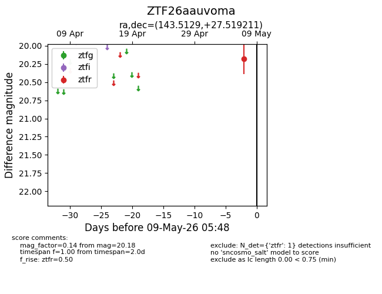
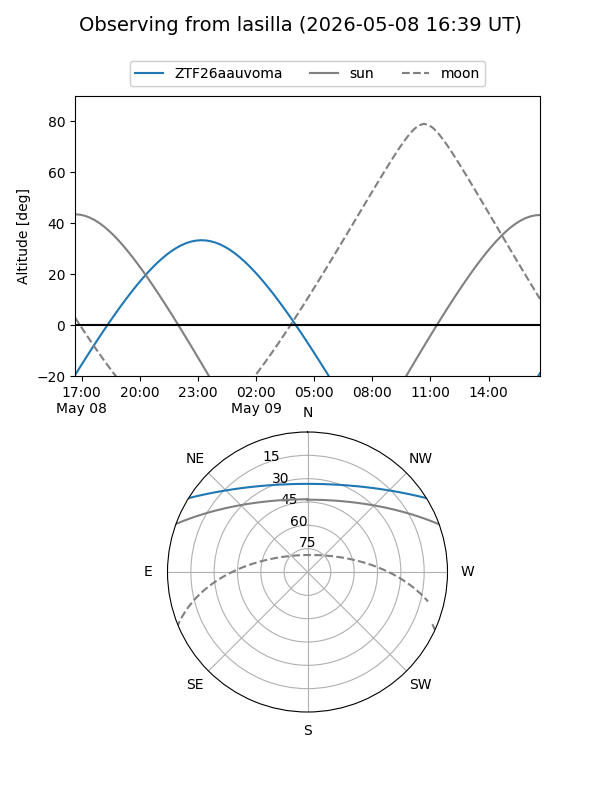
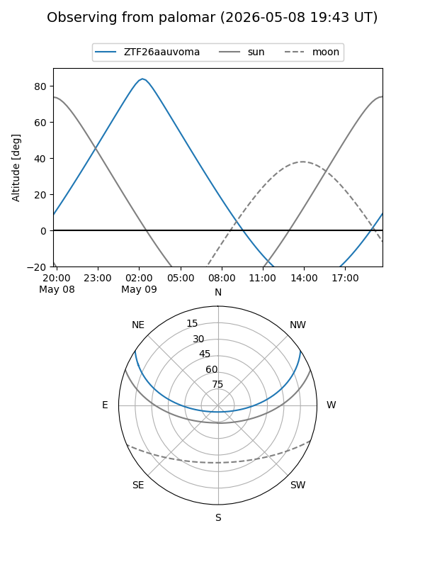

ZTF26aauvoma
Target ZTF26aauvoma at 2026-05-09 05:49
Aliases and brokers:
FINK: link
Lasair: link
ALeRCE: link
alt names
ZTF26aauvoma (ztf,fink_ztf)
Coordinates:
equatorial (ra, dec) = 143.5129,+27.51921
equatorial (HMS+DMS) = 09:34:03.10,+27:31:09.16
galactic (l, b) = (200.5457,+46.46007)
Flags:
Photometry:
last ztfr=20.18
1 ztfr detections
Lightcurve

Visibility


Additional plots